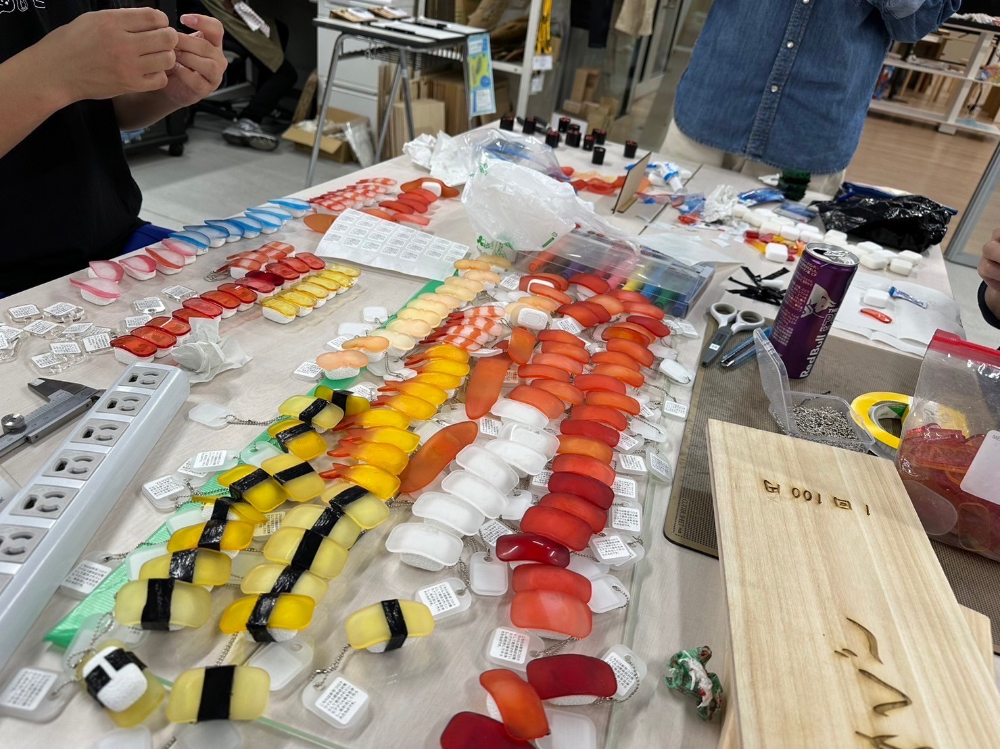
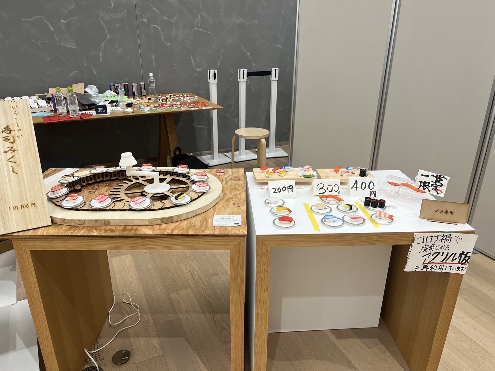

こんにちはreiです。
10月28日（土）、29日（日）に神奈川大学みなとみらいキャンパスで開催される、「みなとみらい祭」で道用ゼミとして、ぷら寿司を出品しました!（
みなとみらい祭ホームページ）
道用ゼミ チームぷら寿司は1階ファブラボ前にて、寿司おみくじの販売と寿司キーホルダーの販売を行いました!
寿司キーホルダーの種類はコチラ
- まぐろ 200円
- サーモン 200円
- イカ 200円
- 海老の天ぷら 200円
- ほたて 300円
- たまご 300円
- サバ 300円
- はまち 300円
- えび 400円
- いくら 400円
計10種類を販売し、3点以上お買い上げの方にはバランをプレゼントしました!
寿司おみくじ
寿司おみくじは回転ずしに乗ってある寿司を手に取ってもらい、シャリの裏に印刷された番号からおみくじをお渡しする方法で販売しました。(100円)
おみくじに当たりが書かれていた方にはミニサイズのお寿司キーホルダーをプレゼントしました!
【準備完了】大量生産に成功

前日準備までに100個以上のキーホルダーの作成に成功しました!

キーホルダー・おみくじ両方の値段も決まり、POP UPのレイアウトも完成!!

たくさんポップを作成して当日を待ちました。
当日の様子
1日目は朝10時の開始時間から多くのお客様に来ていただき、おみくじを筆頭にたくさん販売することができました。
2日目は朝の雨や横浜マラソンの影響もあってか午前中はみなとみらい祭全体の来場者がまばらでありましたが、午後からは天気も良くなり、多くのお客様に来ていただきました。
両日通じてお子さんを連れた家族の方や大学職員の方などに興味を持ってもらえることが多く「かわいい」や「本物みたい」など嬉しいお言葉を頂けました^^
そのほかにも学生の方やぴあアリーナやランドマークなど、みなとみらいの近隣施設に用事があって、みなとみらい祭をたまたま見つけて寄ってくださった方にも購入していただきとても嬉しかったです!
また、コロナ禍で使用されたアクリル板を再利用して作成した点やみなとみらいキャンパス内のファブラボで3Dプリンタやレーザーカッターを使用し作成している点などを説明した際にとても興味を持っていただけたことはとても良いなと感じました。
みなとみらい祭での出店を終えて
当日の様子でも書いたように両日ともに多くのお客様に興味を持ってもらい、商品をたくさん購入していただいたことがまず1番嬉しかったし、それまでの準備を頑張ってきた甲斐があったなと感じました。
また、コロナ禍で使用されたアクリル板を再利用して作成したという点においてぷら寿司を通じてSDG'sの活動が広まっていければなと感じました。
最後に、チーム寿司のメンバー（
たいよー、kawasemi、koki tsunesada）
をはじめ、多くのゼミメンバーやファブラボスタッフの方に手伝ってもらい、多くの人が力を貸してくださったからこそ、みなとみらい祭の成功に繋がったと思います。
ご来場していただいた方、sushi pop upに力を貸して頂いた方本当にありがとうございました。